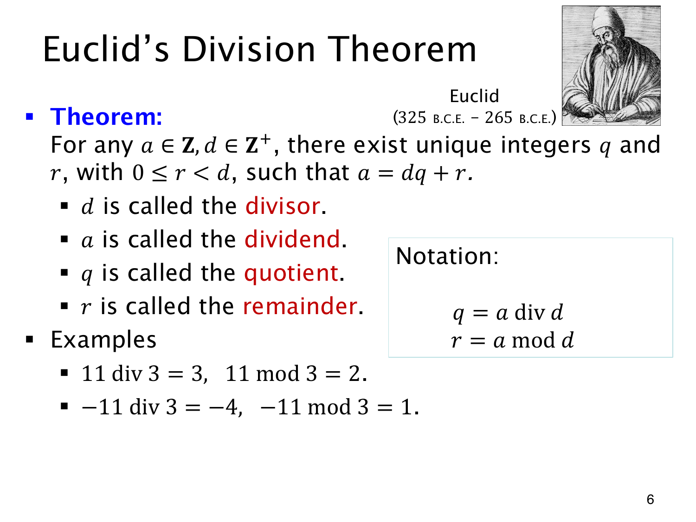

L1.12 · 第 6 页讲解原文
查看这一页课件

带余除法的余数取在哪里
11=3⋅3+2 给出商 3、余数 2。换成 −11 时，仍须把余数放在 0 到 2 之间：
−11=3(−4)+1.
所以 −11div3=−4，−11mod3=1。虽然 −11=3(−3)−2 也成立，余数 −2 却不符合这里的取值要求。
Euclid’s Division Theorem（欧几里得除法定理）将这个要求写成：对任意整数 a 和正整数 d，有唯一的整数 q,r 满足
a=dq+r,0≤r<d.
其中 a 是 dividend（被除数），d 是 divisor（除数），q 是 quotient（商），r 是 remainder（余数）。adivd 取这个整数商，amodd 取余数，都有别于普通实数除法所得的 a/d。正数例子相应写作 11div3=3、11mod3=2。
计算时可取 q=⌊a/d⌋，再算 r=a−dq。若有两种合法表示，两个余数之差就是 d 的倍数，而其绝对值又小于 d，故只能是零；余数相同，商也相同。这也说明 d∣a 恰好等价于 amodd=0。